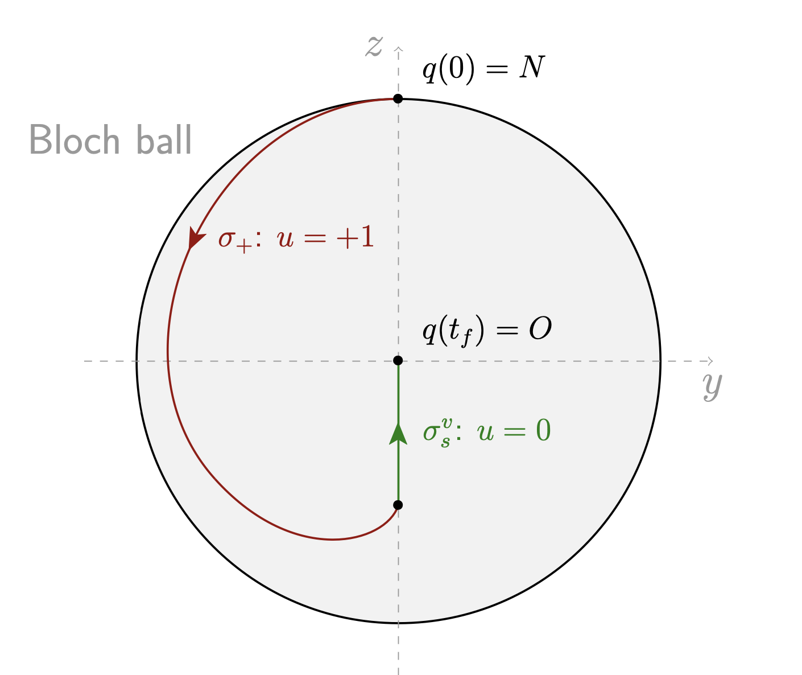

The saturation problem in Magnetic Resonance Imaging
Background overview
From the 2010 survey[1], one of the earliest examples of coherent control of quantum dynamics is manipulation of nuclear spin ensembles using radiofrequency (RF) fields[2]. This manipulation is possible due to the Nuclear Magnetic Resonance (NMR) phenomenon[3] [4] which has become a very powerful tool to study matter in a variety of domains from biology and chemistry to solid physics and quantum mechanics. Two of the main applications of NMR control techniques are maybe high-resolution spectroscopy and Magnetic Resonance Imaging (MRI).
MRI is a medical imaging technique used to produce pictures of the anatomy and investigate physiological processes of the body. The general principles involve the interaction of matter with electromagnetic fields and are the following. When a sample of matter, in liquid phase, is inside a strong and uniform longitudinal magnetic field ($B_0$), the magnetic moments of the spin-$1/2$ particles align with the direction of this field. When a transverse radio-frequency magnetic pulse ($B_1$) is then applied, the sample alter its magnetization alignment relative to the field and its characteristics (the relaxation times $T_1$ and $T_2$). These changes in magnetization alignment produce a changing magnetic flux, which yields to the emission of an electric signal which is detected and amplified. Then, the image is obtained by the analysis of the Fourier transform of this signal. One key point of this process is the control of the magnetization vector via the magnetic pulse. To do that, many different control strategies already exists[4], but the majority are based upon heuristic reasoning[5] [6].
Optimal control algorithms were introduced in NMR to improve control field sequences recently[7] and at the end of the nineties, new methods appeared in optimal control of NMR systems both from the analytical and numerical points of view[8] [9]. More recently, the combination of geometric optimal control based on the Maximum Principle[10] and related numerical algorithms (gradient methods[11], shooting and continuation methods[12]) leads to sophisticated results about the time-minimal saturation problem (which consists in bringing the magnetization vector to zero, ie. the state to the origin) of a single spin[13] with applications to the contrast problem in MRI, see[14] [15]. They are the basis to numerical computations of robust optimal controls which take into account inhomogeneities contained in the $B_0$ and $B_1$ magnetic fields and which have been validated very recently by in vitro and in vivo experiments, see[16] [17].
This background overview is not up-to-date. We refer to [18] for more details.
The Bloch equation
The mathematical model which is suitable for analyzing such problems is to consider an ensemble of spins, each spin being described by a magnetization vector $M = (M_X, M_Y, M_Z)$ in the laboratory frame $0XYZ$ whose evolution satisfies the so-called Bloch equation
\[ \dot{M}(\tau) = \bar{\gamma}\, M(\tau) \wedge B(\tau) + R(M(\tau)),\]
where $\tau$ is the time, $\bar{\gamma}$ is the gyromagnetic ratio of the considered nucleus, $B(\tau) = (B_X(\tau), B_Y(\tau), B_Z(\tau))$ is the total magnetic field applied to the system which decomposes into
\[ B(\tau) = B_0 + B_1(\tau),\]
where $B_0 = B_Z\, e_Z$ is a constant and strong polarizing field in the $Z$-direction, while the control RF-field $B_1(\tau) = B_X(\tau)\, e_X + B_Y(\tau)\, e_Y$ is in the transverse plane $(X,Y)$. The vectors $e_X$, $e_Y$ and $e_Z$ form the standard basis of $\R^3$. The $R(M)$ term represents the dissipation and is of the form:
\[ R(M) = \left( -\frac{M_X}{T_2}, -\frac{M_Y}{T_2}, -\frac{(M_Z-M_0)}{T_1} \right),\]
where $M_0$ is the equilibrium magnetization, and $T_1$, $T_2$ are the relaxation times which are the chemical signatures of the observed species and satisfy the physical constraints $0 < T_2 \le 2\, T_1$. The control is denoted $\omega(\tau) = (\omega_X(\tau),\omega_Y(\tau)) \coloneqq (-\bar{\gamma} B_X(\tau), -\bar{\gamma} B_Y(\tau))$, and is bounded by $\omega_\mathrm{max}$, ie. $\Vert{\omega(\tau)}\Vert\le \omega_\mathrm{max}$, where $\omega_\mathrm{max}$ is the maximal experimental intensity of the experiments and $\Vert{\cdot}\Vert$ is the Euclidean norm.
The Bloch equation can be written in a rotating frame $0xyz$ where the equilibrium is normalized introducing the state $q=(x,y,z)$, the matrices
\[ \Omega_z = \begin{bmatrix} 0 & -1 & 0 \\ 1 & 0 & 0 \\ 0 & 0 & 0 \end{bmatrix}\]
and $S(\tau) = \exp(\tau \, \bar{\omega}\, \Omega_z)$, and writting $M(\tau) = M_0 S(\tau) q(\tau)$. In the rotating frame the Bloch equation becomes:
\[ \dot{q}(\tau) = \begin{bmatrix} -{1}/{T_2} & -\Delta\omega & \omega_y \\ \Delta\omega & -{1}/{T_2} & -\omega_x \\ -\omega_y & \omega_x & -{1}/{T_1} \\ \end{bmatrix}\, q(\tau) + \begin{bmatrix} 0 \\ 0 \\ {1}/{T_1} \end{bmatrix},\]
where $\Delta \omega = \omega_0 - \bar{\omega}$ is the resonance offset, $\omega_0 = -\bar{\gamma} B_Z$ is the resonance frequency and the new control is
\[ \begin{aligned} \omega_x(\tau) \coloneqq \omega_X(\tau) \cos(\bar{\omega} \tau) + \omega_Y(\tau) \sin(\bar{\omega} \tau), \\ \omega_y(\tau) \coloneqq \omega_Y(\tau) \cos(\bar{\omega} \tau) - \omega_X(\tau) \sin(\bar{\omega} \tau), \end{aligned}\]
which preserves the control bound $\omega_x^2(\tau) + \omega_y^2(\tau) \le \omega_\mathrm{max}$. Finally, we introduce the normalized control and time:
\[ u \coloneqq \frac{u_\mathrm{max}}{\omega_\mathrm{max}}\, \omega, \quad t \coloneqq \frac{\omega_\mathrm{max}}{u_\mathrm{max}}\, \tau,\]
such that the normalized control satisfies $\Vert{u(t)}\Vert\le u_\mathrm{max}$. In the sequel, we fix $\bar{\omega} = \omega_0$ which gives $\Delta \omega = 0$ (it is called the resonant case) and which leads to the final normalized Bloch equation:
\[ \left\{ \begin{aligned} \dot{x}(t) &= \displaystyle -\Gamma\, x(t) + u_2(t)\, z(t), \\[0.2em] \dot{y}(t) &= \displaystyle -\Gamma\, y(t) - u_1(t)\, z(t), \\[0.2em] \dot{z}(t) &= \displaystyle \gamma\,(1-z(t)) + u_1(t)\, y(t) - u_2(t)\, x(t), \end{aligned} \right.\]
where
\[ \gamma \coloneqq \frac{u_\mathrm{max}}{w_\mathrm{max}\, T_1}, \quad \Gamma \coloneqq \frac{u_\mathrm{max}}{w_\mathrm{max}\, T_2}, \quad 0 < \gamma \le 2\Gamma.\]
Time parameterization
In this setting, the normalized Bloch equation has 3 positive parameters: $\gamma$, $\Gamma$ and $u_\mathrm{max}$. However, one may choose one parameter to fix since for any $\lambda > 0$ and any triplet $(\gamma, \Gamma, u_\mathrm{max})$, both systems in coordinates $(x, y, z)$ with parameters $(\gamma, \Gamma, u_\mathrm{max})$ or $(\lambda\gamma, \lambda\Gamma, \lambda u_\mathrm{max})$ are equivalent, up to a time reparameterization.
Note that for the constant control $u(\cdot) =(u_\mathrm{max},0)$, starting from $x=0$ and denoting $q = (y,z)$, the Bloch equation becomes to
\[ \dot{x}(t) = -\Gamma\, x(t), \quad \dot{q}(t) = u_\mathrm{max} \begin{pmatrix} 0 & -1 \\ 1 & 0 \end{pmatrix}\, q(t),\]
and the solution is given by $x(t) = 0$, $q(t) = R(u_\mathrm{max}\, t) \, q(0)$ where $R(\theta)$ is the rotation matrix of angle $\theta$. Thus, this trajectory is periodic of period $T$ given by:
\[ T = \frac{2\, \pi}{u_\mathrm{max}}.\]
Classically, one may fix the period to $T=1$ and so $u_\mathrm{max} = 2 \pi$, or on the contrary one may fix $u_\mathrm{max} = 1$ and choose $T = 2 \pi$. From now, we choose to fix $u_\mathrm{max} = 1$.
Spherical coordinates
The Bloch equation in the spherical coordinates
\[ \begin{aligned} x = \rho\, \sin\phi \cos\theta, \quad %\\[0.1em] y = \rho\, \sin\phi \sin\theta, \quad %\\[0.1em] z = \rho\, \cos\phi, \end{aligned}\]
with the feedback $u = R(\theta)^{-1} v$ becomes:
\[ \left\{ \begin{aligned} \dot{\rho}(t) &= \gamma \cos \phi(t)\, (1 - \rho(t) \cos \phi(t)) - \Gamma \rho(t) \sin^2 \phi(t), \\[0.0em] \dot{\phi}(t) &= \delta \sin \phi(t) \cos \phi(t) - \frac{\gamma}{\rho(t)} \sin \phi(t) + v_2(t), \\[0.0em] \dot{\theta}(t) &= - \cot \phi(t)\, v_1(t), \end{aligned} \right.\]
where $\delta \coloneqq \gamma - \Gamma$ and with the control constraint $v_1^2 + v_2^2 = u_1^2 + u_2^2 \le 1$.
The Bloch ball
Definition. The closed unit ball is called the Bloch Ball.
Proposition. The Bloch ball is invariant under the Bloch equations if and only if $0 \le \gamma \le 2 \Gamma$ and it is the smallest invariant closed ball centered at the origin if and only if $0 < \gamma \le 2\, \Gamma$.
Symmetry of revolution and restriction to the 2D case
Considering the Bloch equations in spherical coordinates, one can see that $\theta$ does not appear in the dynamics (it is a cyclic variable) so there exists a one dimensional symmetry group of translations on $\theta$. Hence, one may fix the initial value $\theta(0)$ to $\pi/2$ for instance (it implies $x(0) = 0$). Finally, imposing $\theta(0) = \pi/2$ and $u_2 = 0$, then, one can reduce (since $x(t)=0$ for any time $t$) the Bloch equations to the following two dimensional single-input control system:
\[ \left\{ \begin{aligned} \dot{y}(t) &= \displaystyle -\Gamma\, y(t) - u(t)\, z(t), \\[0.2em] \dot{z}(t) &= \displaystyle \gamma\,(1-z(t)) + u(t)\, y(t), \end{aligned} \right.\]
where $u \coloneqq u_1$ satisfies $|{u(t)}| \le 1$.
This control system is affine in the control and may be written in the form
\[ \dot{q}(t) = F_0(q(t)) + u(t)\, F_1(q(t)),\]
where $q \coloneqq (y,z)$ is the state and where the vector fields $F_0$ and $F_1$ are given by:
\[ F_0(q) = -\Gamma\, y \frac{\partial}{\partial y} + \gamma\, (1 - z) \frac{\partial}{\partial z}, \quad F_1(q) = -z \frac{\partial}{\partial y} + y \frac{\partial}{\partial z}.\]
The admissible control set $\mathcal{U}$ is then defined as
\[ \left\{ u(\cdot) \colon [0, \infty) \to [-1, 1] ~|~ u(\cdot) \text{ measurable} \right\}.\]
The time-optimal saturation problem
The time-optimal saturation problem is the following: starting from a given point in the Bloch ball, the goal is to reach in minimum time the center of the Bloch ball, which corresponds at the final time to zero magnetization of the spin.
We define the time-optimal saturation problem as the following optimal control problem:
\[ \inf t_f, \quad \text{s.t.} \quad u(\cdot) \in \mathcal{U}, \quad t_f \ge 0 \quad \text{and} \quad q(t_f, N, u(\cdot)) = O,\]
where $N = (0, 1)$ is the North pole, where $O = (0,0)$ is the origin of the Bloch ball and where $t \mapsto q(t, q_0, u(\cdot))$ is the unique maximal solution of the 2D control system $\dot{q} = F_0(q) + u\, F_1(q)$ associated to the control $u(\cdot)$ and starting from the given initial condition $q_0$.
The inversion sequence ${\sigma_+} {\sigma_s^v}$, that is a positive bang arc followed by a singular vertical arc with zero control, is the simplest way to go from $N$ to $O$. Is it optimal?
We have the following symmetry.
Proposition. Let $(y(\cdot), z(\cdot))$, with associated control $u(\cdot)$, be a trajectory solution of $\dot{q} = F_0(q) + u\, F_1(q)$. Then, $(-y(\cdot), z(\cdot))$ with control $-u(\cdot)$ is also solution of this system.
This discrete symmetry allows us to consider only trajectories inside the domain $\{y \le 0\}$ of the Bloch ball.
In order to solve numerically the problem, we need to set the parameters. We introduce the practical cases in the following table. We give the relaxation times with the associated $(\gamma, \Gamma)$ parameters for $\omega_\mathrm{max} = 2 \pi\times 32.3$ Hz. Note that in the experiments, $\omega_\mathrm{max}$ may be chosen up to 15 000 Hz but we consider the same value as in [16].
| Name | $T_1$ | $T_2$ | $\gamma$ | $\Gamma$ | $\delta=\gamma-\Gamma$ |
|---|---|---|---|---|---|
| Water | 2.5 | 2.5 | $1.9710e^{-03}$ | $1.9710e^{-03}$ | $0.0$ |
| Cerebrospinal Fluid | 2.0 | 0.3 | $2.4637e^{-03}$ | $1.6425e^{-02}$ | $-1.3961^{-02}$ |
| Deoxygenated blood | 1.35 | 0.05 | $3.6499e^{-03}$ | $9.8548e^{-02}$ | $-9.4898^{-02}$ |
| Oxygenated blood | 1.35 | 0.2 | $3.6499e^{-03}$ | $2.4637e^{-02}$ | $-2.0987^{-02}$ |
| Gray cerebral matter | 0.92 | 0.1 | $5.3559e^{-03}$ | $4.9274e^{-02}$ | $-4.3918^{-02}$ |
| White cerebral matter | 0.78 | 0.09 | $6.3172e^{-03}$ | $5.4749e^{-02}$ | $-4.8432^{-02}$ |
| Fat | 0.2 | 0.1 | $2.4637e^{-02}$ | $4.9274e^{-02}$ | $-2.4637^{-02}$ |
| Brain | 1.062 | 0.052 | $4.6397e^{-03}$ | $9.4758e^{-02}$ | $-9.0118^{-02}$ |
| Parietal muscle | 1.2 | 0.029 | $4.1062e^{-03}$ | $1.6991e^{-01}$ | $-1.6580^{-02}$ |
Table: Matter name with associated relaxation times in seconds and relative $(\gamma, \Gamma)$ parameters with $\omega_\mathrm{max} = 2 \pi\times 32.3$ Hz and $u_\mathrm{max} = 1$.
We consider the Deoxygenated blood case. According to Theorem 3.6 from [19] the optimal solution is of the form Bang-Singular-Bang-Singular (BSBS). The two bang arcs are with control $u=1$. The first singular arc is contained in the horizontal line $z=\gamma/2\delta$ while the second singular arc is contained in the vertical line $y=0$. We propose in the following to retrieve this result numerically.
Let us first define the parameters with the two vector fields $F_0$ and $F_1$.
import OptimalControl: ⋅
⋅(a::Number, b::Number) = a*b
# Blood case
T1 = 1.35 # s
T2 = 0.05
ω = 2π⋅32.3 # Hz
γ = 1/(ω⋅T1)
Γ = 1/(ω⋅T2)
δ = γ - Γ
zs = γ / 2δ # singular ordinate of the horizontal singular line
F0(y, z) = [ -Γ⋅y, γ⋅(1-z) ]
F1(y, z) = [ -z, y ]
q0 = [ 0, 1 ] # initial stateThen, we can define the problem with the OptimalControl.jl package.
using OptimalControl
@def ocp begin
tf ∈ R, variable
t ∈ [ 0, tf ], time
q = [ y, z ] ∈ R², state
u ∈ R, control
q(0) == q0
q(tf) == [ 0, 0 ]
-1 ≤ u(t) ≤ 1
q̇(t) == F0(q(t)...) + u(t) * F1(q(t)...)
tf → min
tf ≥ 0
endDirect method
We start to solve the problem with a direct method. The problem is transcribed into a NLP optimization problem thanks to the package OptimalControl.jl. The NLP problem is then solved by the well-known solver ipopt thanks to the package NLPModelsIpopt.jl.
We first start with a coarse grid, with only 50 points. We provide an init to get a solution in the domain $y \le 0$.
using NLPModelsIpopt
N = 50
sol = solve(ocp; grid_size=N, init=(state=[-0.5, 0.0], ), print_level=4)Method = (:direct, :adnlp, :ipopt)
Total number of variables............................: 154
variables with only lower bounds: 1
variables with lower and upper bounds: 51
variables with only upper bounds: 0
Total number of equality constraints.................: 104
Total number of inequality constraints...............: 0
inequality constraints with only lower bounds: 0
inequality constraints with lower and upper bounds: 0
inequality constraints with only upper bounds: 0
Number of Iterations....: 69
(scaled) (unscaled)
Objective...............: 4.3291584173531781e+01 4.3291584173531781e+01
Dual infeasibility......: 4.2454817439363524e-11 4.2454817439363524e-11
Constraint violation....: 1.4598322550796183e-12 1.4598322550796183e-12
Variable bound violation: 9.9811239273606134e-09 9.9811239273606134e-09
Complementarity.........: 2.0311924789204849e-11 2.0311924789204849e-11
Overall NLP error.......: 4.2454817439363524e-11 4.2454817439363524e-11
Number of objective function evaluations = 85
Number of objective gradient evaluations = 70
Number of equality constraint evaluations = 85
Number of inequality constraint evaluations = 0
Number of equality constraint Jacobian evaluations = 70
Number of inequality constraint Jacobian evaluations = 0
Number of Lagrangian Hessian evaluations = 69
Total seconds in IPOPT = 0.895
EXIT: Optimal Solution Found.Then, we plot the solution thanks to Plots.jl.
using Plots
plt = plot(sol; size=(700, 500), solution_label="(N = "*string(N)*")")This rough approximation is then refine on a finer grid of 500 points. This two steps resolution increases the speed of convergence. Note that we provide the previous solution as initialisation.
N = 500
direct_sol = solve(ocp; grid_size=N, init=sol, print_level=4, tol=1e-12)Method = (:direct, :adnlp, :ipopt)
Total number of variables............................: 1504
variables with only lower bounds: 1
variables with lower and upper bounds: 501
variables with only upper bounds: 0
Total number of equality constraints.................: 1004
Total number of inequality constraints...............: 0
inequality constraints with only lower bounds: 0
inequality constraints with lower and upper bounds: 0
inequality constraints with only upper bounds: 0
Number of Iterations....: 11
(scaled) (unscaled)
Objective...............: 4.2725098369300866e+01 4.2725098369300866e+01
Dual infeasibility......: 4.5297099404706387e-13 4.5297099404706387e-13
Constraint violation....: 2.4980018054066022e-16 2.4980018054066022e-16
Variable bound violation: 9.9941457332164418e-09 9.9941457332164418e-09
Complementarity.........: 5.0000793557472605e-13 5.0000793557472605e-13
Overall NLP error.......: 5.0000793557472605e-13 5.0000793557472605e-13
Number of objective function evaluations = 12
Number of objective gradient evaluations = 12
Number of equality constraint evaluations = 12
Number of inequality constraint evaluations = 0
Number of equality constraint Jacobian evaluations = 12
Number of inequality constraint Jacobian evaluations = 0
Number of Lagrangian Hessian evaluations = 11
Total seconds in IPOPT = 8.512
EXIT: Optimal Solution Found.We can compare both solutions. The BSBS is revelead even if second bang arc is not clearly demonstrated.
plot!(plt, direct_sol; solution_label="(N = "*string(N)*")")We define a custom plot function to plot the solution inside the Bloch ball.
spin_plot — Function
And then plot again the solution. We can see that the first bang arc permits to reach the horizontal singular line $z=\gamma/2\delta$ which is depicted with a dashed line. The second bang arc is very short which explains why it is not well captured. We should refine the grid around this bang arc to capture it well.
spin_plot(direct_sol; size=(700, 350))We extract now the useful information from the direct solution to provide an initial guess for the indirect method in the following part. For instance, we need the initial costate together with the switching times between bang and sinular arcs and the final time.
t = direct_sol.times
q = direct_sol.state
p = direct_sol.costate
u = direct_sol.control
tf = direct_sol.variable
t0 = 0
pz0 = p(t0)[2]
t_bang_1 = t[ (abs.(u.(t)) .≥ 0.25) .& (t .≤ 5)]
t_bang_2 = t[ (abs.(u.(t)) .≥ 0.25) .& (t .≥ 35)]
t1 = max(t_bang_1...)
t2 = min(t_bang_2...)
t3 = max(t_bang_2...)
q1, p1 = q(t1), p(t1)
q2, p2 = q(t2), p(t2)
q3, p3 = q(t3), p(t3)
println("pz0 = ", pz0)
println("t1 = ", t1)
println("t2 = ", t2)
println("t3 = ", t3)
println("tf = ", tf)pz0 = -10.134292900434778
t1 = 1.6235537380334328
t2 = 36.230883417167135
t3 = 37.68353676172337
tf = 42.725098369300866Indirect method
We introduce the pseudo-Hamiltonian
\[H(q, p, u) = H_0(q, p) + u\, H_1(q, p)\]
where $H_0(q, p) = p \cdot F_0(q)$ and $H_1(q, p) = p \cdot F_1(q)$ are both Hamiltonian lifts. According to the maximisation condition from the Pontryagin Maximum Principle (PMP), a bang arc occurs when $H_1$ is nonzero and of constant sign along the arc. On the contrary the singular arcs are contained in $H_1 = 0$. If $t \mapsto H_1(q(t), p(t)) = 0$ along an arc then its derivative is also zero. Thus, along a singular arc we have also
\[\frac{\mathrm{d}}{\mathrm{d}t} H_1(q(t), p(t)) = \{H_0, H_1\}(q(t), p(t)) = 0,\]
where $\{H_0, H_1\}$ is the Poisson bracket of $H_0$ and $H_1$.
Let $F_0$, $F_1$ be two smooth vector fields on a smooth manifold $M$ and $f$ a smooth function pn $M$. Let $x$ be local coordinates. The Lie bracket of $F_0$ and $F_1$ is given by
\[ [F_0,F_1] \coloneqq F_0 \cdot F_1 - F_1 \cdot F_0,\]
with $(F_0 \cdot F_1)(x) = \mathrm{d} F_1(x) \cdot F_0(x)$. The Lie derivative $\mathcal{L}_{F_0} f$ of $f$ along $F_0$ is simply written $F_0\cdot f$. Denoting $H_0$, $H_1$ the Hamiltonian lifts of $F_0$, $F_1$, then the Poisson bracket of $H_0$ and $H_1$ is
\[ \{H_0,H_1\} \coloneqq \vec{H_0} \cdot H_1.\]
We also use the notation $H_{01}$ (resp. $F_{01}$) to write the bracket $\{H_0,H_1\}$ (resp. $[F_0,F_1]$) and so forth. Besides, since $H_0$, $H_1$ are Hamiltonian lifts, we have $\{H_0,H_1\}= p \cdot [F_0,F_1]$.
We define next a function to plot the switching function $t \mapsto H_1(q(t), p(t))$ and its derivative along the solution computed by the direct method.
switching_plot — Function
We can notice on the plots below that maximisation condition from the PMP is not satisfied. We can see that the switching function becomes negative along the first bang arc but there is no switching from the control plot. Besides, we can see that along the first singular arc, the switching function is not always zero.
H0 = Lift(q -> F0(q...))
H1 = Lift(q -> F1(q...))
H01 = @Lie { H0, H1 }
switching_plot(direct_sol, H1, H01; size=(700, 900))We aim to compute a better approximation of the solution thanks to indirect shooting. To do so, we need to define the three different flows associated to the three different control laws in feedback form: bang control, singular control along the horizontal line and singular control along the vertical line.
Let us recall that $\delta = \gamma - \Gamma$. Then, for any $q = (y,z)$ we have:
\[ \begin{aligned} F_{01}(q) &= -(\gamma - \delta z) \frac{\partial}{\partial y} + \delta y \frac{\partial}{\partial z}, \\[0.5em] F_{001}(q) &= \left( \gamma\, (\gamma - 2\Gamma) - \delta^2 z\right)\frac{\partial}{ \partial y} + \delta^2 y \frac{\partial}{\partial z}, \\[0.5em] F_{101}(q) &= 2 \delta y \frac{\partial}{\partial y} + (\gamma - 2 \delta z) \frac{\partial}{\partial z}. \end{aligned}\]
Along a singular arc, we have $H_1 = H_{01} = 0$, that is $p \cdot F_1 = p \cdot F_{01} = 0$. Since, $p$ is of dimension 2 and is nonzero, then we have $\det(F_1, F_{01}) = y ( \gamma - 2 \delta z) = 0$. This gives us the two singular lines.
ALong the horizontal singular line, the control is given by
\[ u_s(y) \coloneqq \gamma (2\Gamma - \gamma) / (2 \delta y)\]
while along the vertical line it is given by $u_0 \coloneqq 0$. We refer to [19] for details about how to compute the singular controls in feedback form.
using OrdinaryDiffEq
# Controls
u0 = 0 # off control: vertical singular line
u1 = 1 # bang control
us(y) = γ⋅(2Γ−γ)/(2δ⋅y) # singular control: horizontal line
# Flows
f0 = Flow(ocp, (q, p, tf) -> u0, abstol=1e-14, reltol=1e-10)
f1 = Flow(ocp, (q, p, tf) -> u1, abstol=1e-14, reltol=1e-10)
fs = Flow(ocp, (q, p, tf) -> us(q[1]), abstol=1e-14, reltol=1e-10)With the previous flows, we can define the shooting function considering the sequence Bang-Singular-Bang-Singular. There are 3 switching times $t_1$, $t_2$ and $t_3$. The final time $t_f$ is unknown such as the initial costate. To reduce the sensitivy of the shooting function we also consider the states and costates at the switching times as unknowns and we add some matching conditions.
Note that the final time is free, hence, in the normal case, $H = -p^0 = 1$ along the solution of the PMP. Considering this condition at the initial time, we obtain $p_y(0) = -1$. At the entrance of the singular arcs, we must satisfy $H_1 = H_{01} = 0$ For the first singular arc, this leads to the conditions
\[ - p_y(t_1) z_s + p_z(t_1) y(t_1) = z(t_1) - z_s = 0\]
At the entrance of the second singular arc, we have
\[ p_y(t_3) = y(t_3) = 0.\]
Finally, the solution has to satisfy the final condition $q(t_f) = (0, 0)$. Since, the last singular arc is contained in $y=0$, this condition is redundant and so we only need to check that $z(t_f) = 0$.
Altogether, this leads to the following shooting function.
function shoot!(s, pz0, t1, t2, t3, tf, q1, p1, q2, p2, q3, p3)
p0 = [-1, pz0]
q1_, p1_ = f1(t0, q0, p0, t1)
q2_, p2_ = fs(t1, q1, p1, t2)
q3_, p3_ = f1(t2, q2, p2, t3)
qf , pf = f0(t3, q3, p3, tf)
s[1] = - p1[1] ⋅ zs + p1[2] ⋅ q1[1] # H1 = H01 = 0 on the horizontal
s[2] = q1[2] - zs # singular line, z=zs
s[3] = p3[1] # H1 = H01 = 0 on the vertical
s[4] = q3[1] # singular line, y=0
s[5] = qf[2] # z(tf) = 0
s[ 6: 7] .= q1 - q1_
s[ 8: 9] .= p1 - p1_
s[10:11] .= q2 - q2_
s[12:13] .= p2 - p2_
s[14:15] .= q3 - q3_
s[16:17] .= p3 - p3_
endWe are now in position to solve the shooting equations. Due to the sensitivity of the first singular arc, we need to improve the initial guess obtained from the direct method to make the Newton solver converge. To do so we set for the initial guess:
\[ z(t_1) = z_s\]
and
\[ p_z(t_1) = p_y(t_1) z_s / y(t_1).\]
One can see below from the norm of the shooting function at the initial guess that it is not very accurate.
# we refine the initial guess to make the Newton solver converge
q1[2] = zs
p1[2] = p1[1] ⋅ zs / q1[1]
# Norm of the shooting function at initial guess
using LinearAlgebra: norm
s = similar([pz0], 17)
shoot!(s, pz0, t1, t2, t3, tf, q1, p1, q2, p2, q3, p3)
println("Norm of the shooting function: ‖s‖ = ", norm(s), "\n")Norm of the shooting function: ‖s‖ = 229.62197090144326Finally, we can solve the shooting equations thanks to the NonlinearSolve.jl and improve our solution.
using NonlinearSolve
# auxiliary function with aggregated inputs
nle = (s, ξ, λ) -> shoot!(s, ξ[1], ξ[2:5]..., ξ[6:7], ξ[8:9], ξ[10:11], ξ[12:13], ξ[14:15], ξ[16:17])
ξ = [ pz0 ; t1 ; t2 ; t3 ; tf ; q1 ; p1 ; q2 ; p2 ; q3 ; p3] # initial guess
prob = NonlinearProblem(nle, ξ)
indirect_sol = NonlinearSolve.solve(prob; abstol=1e-8, reltol=1e-8, show_trace=Val(true)) # resolution of S = 0
# we retrieve the costate solution together with the times
pz0 = indirect_sol.u[1]
t1 = indirect_sol.u[2]
t2 = indirect_sol.u[3]
t3 = indirect_sol.u[4]
tf = indirect_sol.u[5]
q1 = indirect_sol.u[6:7]
p1 = indirect_sol.u[8:9]
q2 = indirect_sol.u[10:11]
p2 = indirect_sol.u[12:13]
q3 = indirect_sol.u[14:15]
p3 = indirect_sol.u[16:17]
println("pz0 = ", pz0)
println("t1 = ", t1)
println("t2 = ", t2)
println("t3 = ", t3)
println("tf = ", tf)
# Norm of the shooting function at solution
s = similar([pz0], 17)
shoot!(s, pz0, t1, t2, t3, tf, q1, p1, q2, p2, q3, p3)
println("Norm of the shooting function: ‖s‖ = ", norm(s), "\n")
Algorithm: NewtonRaphson(
descent = NewtonDescent()
)
---- ------------- -----------
Iter f(u) inf-norm Step 2-norm
---- ------------- -----------
0 2.12199678e+02 6.90169162e-310
1 1.15475612e+02 1.36677682e+02
2 6.76410876e-01 1.35846612e+02
3 4.76759244e-01 6.35212038e+00
4 4.02887693e-01 6.27300706e+00
5 1.18566079e-01 3.32672607e+00
6 5.76461857e-02 2.51034096e+00
7 1.31279267e-03 3.39871751e-01
8 1.68113594e-05 4.34573516e-02
9 1.72889258e-10 3.90689332e-05
Final 1.72889258e-10
----------------------
pz0 = -10.10302716222643
t1 = 1.6450509469599062
t2 = 37.32398123467095
t3 = 37.580773565374166
tf = 42.713708753650884
Norm of the shooting function: ‖s‖ = 1.745173837358027e-10Let us plot the indirect solution. One can note that the second bang arc is well captured.
f = f1 * (t1, fs) * (t2, f1) * (t3, f0) # concatenation of the flows
indirect_sol = f((t0, tf), q0, [-1, pz0]) # compute the solution: state, costate, control...
spin_plot(indirect_sol; size=(700, 350))
From the following plot, one can see that the maximisation condition from the PMP is now well satisfied compared to the solution obtained from the direct method.
switching_plot(indirect_sol, H1, H01; size=(700, 900))- 1C. Brif, R. Chakrabarti & H. Rabitz, Control of Quantum Phenomena: Past, Present and Future, New Journal for Physics, 12 (2010), pp.1–68.
- 2A. Abragam, The Principles of Nucelar Magnetism, Oxford University Press, London (1961).
- 3R. R. Ernst, Principles of Nuclear Magnetic Resonance in one and two dimensions International Series of Monographs on Chemistry, Oxford University Press, Oxford (1990).
- 4M. H. Levitt, Spin dynamics: Basics of Nuclear Magnetic Resonance, John Wiley & Sons, New York-London-Sydney (2008).
- 5M. A. Berstein, K. F. King & X. J. Zhou, Handbook of MRI pulse sequences, Elsevier, Amsterdam (2004).
- 6J. N. Rydberg, S. J. Riederer, C. H. Rydberg & C. R. Jack, Contrast optimization of fluid-attenuated inversion recovery (flair) imaging, Magn. Reson. Med., 34 (1995), no. 6, 868–877.
- 7S. Conolly, D. Nishimura & A. Macovski, Optimal control solutions to the magnetic resonance selective excitation problem, IEEE Trans. Med. Imaging, 5 (1986), no. 2, 106–115.
- 8N. Khaneja, S. J. Glaser & R. Brockett, Sub-Riemannian geometry and time optimal control of three spin systems: quantum gates and coherence transfer, Phys. Rev. A, 65 (2002), no. 3, 032301, pp.11. Errata Phys. Rev. A 68 (2003), 049903; Phys. Rev. A 71 (2005), 039906.
- 9T. E. Skinner, T. O. Reiss, B. Luy, N. Khaneja & S. J. Glaser, Application of optimal control theory to the design of broadband excitation pulses for high-resolution NMR, J. Magn. Reson., 163 (2003), no. 1, 8–15.
- 10L. S. Pontryagin, V. G. Boltyanskii, R. V. Gamkrelidze & E. F. Mishchenko, The Mathematical Theory of Optimal Processes, Translated from the Russian by K. N. Trirogoff, edited by L. W. Neustadt, Interscience Publishers John Wiley & Sons, Inc., New York-London, 1962.
- 11N. Khaneja, T. Reiss, C. Kehlet, T. Schulte-Herbriiggen & S. J. Glaser, Optimal control of coupled spin dynamics: design of NMR pulse sequences by gradient ascent algorithms, J. Magn. Reson., 172 (2005), no. 2, 296–305.
- 12O. Cots, Contrôle optimal géométrique : méthodes homotopiques et applications, Phd thesis, Institut Mathématiques de Bourgogne, Dijon, France, 2012.
- 13M. Lapert, Y. Zhang, M. Braun, S. J. Glaser & D. Sugny, Singular extremals for the time-optimal control of dissipative spin 1/2 particles, Phys. Rev. Lett., 104 (2010), 083001.
- 14B. Bonnard, M. Chyba & J. Marriott, Singular Trajectories and the Contrast Imaging Problem in Nuclear Magnetic resonance, SIAM J. Control Optim., 51 (2013), no. 2, 1325–1349.
- 15M. Lapert, Y. Zhang, M. A. Janich, S. J. Glaser & D. Sugny, Exploring the physical limits of saturation contrast in magnetic resonance imaging, Sci. Rep., 589 (2012), no. 2.
- 16B. Bonnard, O. Cots, S. Glaser, M. Lapert, D. Sugny & Y. Zhang, *Geometric optimal control of the contrast imaging problem in nuclear magnetic resonance, IEEE Trans. Automat. Control, 57 (2012), no. 8, 1957–1969.
- 17E. Van Reeth, H. Ratiney, M. Tesch, D. Grenier, O. Beuf, S. J. Glaser & D. Sugny, Optimal control design of preparation pulses for contrast optimization in MRI, J. Magn. Reson., 279 (2017), 39–50.
- 18C. P. Koch, U. Boscain, T. Calarco, G. Dirr, S. Filipp, S. J. Glaser, R. Kosloff, S. Montangero, T. Schulte-Herbrüggen, D. Sugny & F. K. Wilhelm, Quantum optimal control in quantum technologies. strategic report on current status, visions and goals for research in europe, EPJ Quantum Technology, 9 (2022), p. 60.
- 19Bonnard, B.; Cots, O.; Rouot, J.; Verron, T. Time minimal saturation of a pair of spins and application in magnetic resonance imaging. Mathematical Control and Related Fields, 2020, 10 (1), pp.47-88. https://inria.hal.science/hal-01779377